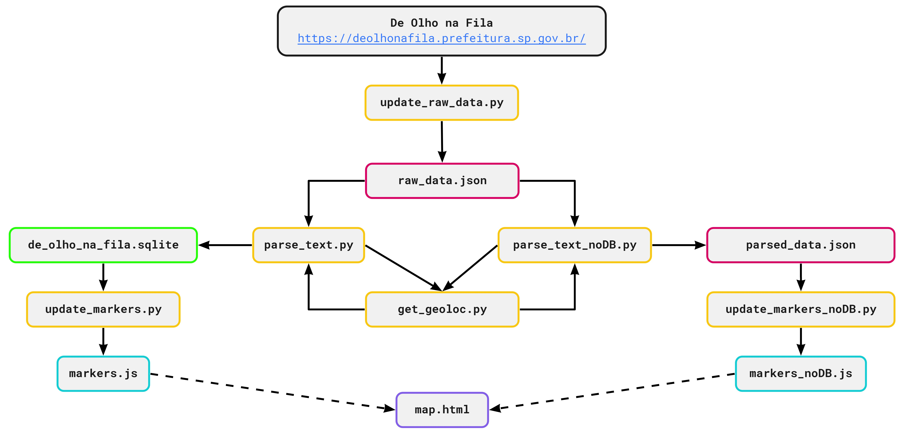

Project to map all vaccination spots in São Paulo and to update their line lengths and their vaccine availability status.
All the information displayed by this map is available in an official website updated by the city of São Paulo's administration: deolhonafila.prefeitura.sp.gov.br.
This is the logic of the project's files and scripts:
Two different ways to update the final 'markers.js' file, which is read by the webpage were created: one using SQLite to store all status updates and one faster, more direct way without databases.
To update the SQLite DB option one must run the code in the 'update_markers.py' file; for the other option, the 'update_markers_noDB.py' file.
The map is accessible here: www.paderox.com/de_olho_na_fila/map.html
Here is a preview: